Motion design
Motion in SmartTest explains causality: a change propagates, the affected parts light up, and the protecting tests turn green. If an animation doesn't show cause and effect, or progress, we don't add it.

Principles #
- Meaning over decoration. Every animated property maps to a state change in the product (changed → affected → selected → skipped).
- Follow the arrow. Motion travels in the direction of impact: from the change, along reverse dependencies, to the tests. Never backwards.
- The final frame tells the whole story. Assets are authored so that the static state is the complete, informative end state. Reduced-motion users and static renderers lose nothing.
- Calm loops. Loops hold the result for most of the cycle (≥ 45 %) and reset with a fade, never a jump cut.
- Fast in the product, narrative in marketing. UI transitions take 80–360 ms. Only README and docs illustrations use multi-second choreography.
Tokens #
| Token | Value | Use |
|---|---|---|
--st-dur-instant | 80 ms | Hover, press, focus ring |
--st-dur-fast | 140 ms | Toggles, chips, small reveals |
--st-dur-base | 220 ms | Panels, list insertions, status changes |
--st-dur-slow | 360 ms | Route transitions, graph re-layout |
--st-dur-narrative | 7–14 s loop | README/docs illustrations only |
--st-ease-out-expo | cubic-bezier(0.22, 1, 0.36, 1) | Things arriving: edges drawing, cards entering |
--st-ease-in-out | cubic-bezier(0.65, 0, 0.35, 1) | Things moving between two states |
--st-ease-linear | linear | Progress, travelling pulses, spinners |
--st-stagger | 40 ms per item (max 8 items) | Lists of results appearing |
Choreography: the impact sequence #
Used in the hero and the impact map, and later in the Studio when an impact is recomputed.
| Beat | % of loop | What moves | Meaning |
|---|---|---|---|
| 1. Pulse | 0 → 8 | Ripple rings on the changed node (amber) | "This changed" |
| 2. Level 1 | 8 → 22 | Edges draw from the change to direct dependents (stroke-dashoffset, ease-out-expo). Nodes turn violet on arrival | "These depend on it" |
| 3. Level 2 | 26 → 40 | Edges draw to tests. Tests turn green and a ✓ appears | "These tests protect it" |
| 4. Contrast | 40 → 46 | Unrelated tests dim to 45 % and get a "skipped" tag | "These don't, so they're not run" |
| 5. Explain | 46 → 52 | The explanation card slides in from 16 px | "Here's why" |
| 6. Hold | → 86–88 | Nothing moves | Time to read |
| 7. Reset | → 95–96 | Highlights fade out | Loop |
Asset catalogue #
| Asset | Loop | Story told |
|---|---|---|
hero.svg | 7 s | Change → dependents → 3 selected tests; others skipped |
pipeline.svg | 8 s | A pulse travels through the 7 stages; each stage lights up as it's reached |
terminal.svg | 14 s | Typing npx smarttest run --affected, phases, selected results, honest summary |
impact-map.svg | 9 s | The spec's AuthService example, with an explain card |
logo.svg | static | The check-mark graph |


Technical rules for SVG assets #
Pure SVG + CSS
@keyframes. No JavaScript, no SMIL, no external fonts or images. They render on GitHub through<img>, which sandboxes scripts anyway.Animate only
opacity,transform,stroke-dashoffset,fillandstroke. Edges usepathLength="1"so a single keyframe works for every path.Every asset includes:
@media (prefers-reduced-motion: reduce) { *, *::before, *::after { animation: none !important; } }and its default (non-animated) styles are the final frame.
role="img"plus<title>and<desc>describe the story for screen readers.Keep each file under 15 KB.
Never edit the SVGs by hand. Change the generator and run
pnpm assets:build.
Motion in the product #
| Surface | Motion |
|---|---|
| CLI | Spinner only while waiting > 300 ms. Results appear line by line (no artificial delay). No animation in non-TTY |
| HTML report (1.0) | Section reveal on first paint (base, staggered). Reason accordions (fast). Status chips never animate after the first paint, so a status never "changes" on screen without a cause |
| Studio (0.9.0) | Impact sequence on recompute (scaled to 600–900 ms total). Live Runner rows enter with stagger. Graph re-layout at slow duration with ease-in-out |
Don'ts #
- No bouncing, elastic or overshoot easing on status. A test result is not playful.
- No looping motion in the product UI except progress indicators.
- No motion that could suggest a skipped test ran: skipped items dim, they never "pass by".
- No parallax, no scroll-jacking.